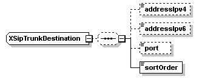

| diagram |  | ||
| namespace | http://www.cisco.com/AXL/API/10.5 | ||
| children | addressIpv4 addressIpv6 port sortOrder | ||
| used by |
|
||
| source | <xsd:complexType name="XSipTrunkDestination"> <xsd:sequence minOccurs="0"> <xsd:element name="addressIpv4" type="axlapi:String255" minOccurs="0" maxOccurs="1"/> <xsd:element name="addressIpv6" type="axlapi:String255" minOccurs="0" maxOccurs="1"/> <xsd:element name="port" type="axlapi:XInteger" default="5060" minOccurs="0" maxOccurs="1"/> <xsd:element name="sortOrder" type="axlapi:XInteger" minOccurs="1" maxOccurs="1"/> </xsd:sequence> </xsd:complexType> |
| diagram | |||||||
| type | axlapi:String255 | ||||||
| properties |
|
||||||
| facets |
|
||||||
| source | <xsd:element name="addressIpv4" type="axlapi:String255" minOccurs="0" maxOccurs="1"/> |
| diagram | |||||||
| type | axlapi:String255 | ||||||
| properties |
|
||||||
| facets |
|
||||||
| source | <xsd:element name="addressIpv6" type="axlapi:String255" minOccurs="0" maxOccurs="1"/> |
| diagram | |||||||||
| type | axlapi:XInteger | ||||||||
| properties |
|
||||||||
| source | <xsd:element name="port" type="axlapi:XInteger" default="5060" minOccurs="0" maxOccurs="1"/> |
| diagram | |||
| type | axlapi:XInteger | ||
| properties |
|
||
| source | <xsd:element name="sortOrder" type="axlapi:XInteger" minOccurs="1" maxOccurs="1"/> |